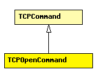

File: Transport/Contract/TCPCommand.msg
C++ definition: click here
Control info to be used for active or passive TCP open.
localAddr, remoteAddr, localPort, remotePort should be self-explanatory. localAddr is optional because TCP can learn it from IP when a packet is received from the peer; localPort is optional because TCP supports ephemeral ports.
The sendQueueClass, receiveQueueClass and tcpAlgorithmClass fields allow per-connection TCP configuration. These fields may contain names of classes subclassed from TCPSendQueue, TCPReceiveQueue and TCPAlgorithm, respectively. If not set, module parameters with similar names are used.
The fork parameter is used with passive open, and controls what happens when an incoming connection is received. With fork=true, it emulates the Unix accept(2) syscall semantics: a new connection structure is created for the connection (with a new connId, see in TCPCommand), and the connection structure with the old connId remains listening. With fork=false, all the above does not happen: the first connection is accepted (with the original connId), and further incoming connections will be refused by TCP by sending an RST segment.
See also: TcpCommandCode, TCP
The following diagram shows part of the inheritance hierarchy. Unresolved types are missing from the diagram. Click here to see the full picture.
| TCPCommand | Control info for TCP connections. This class is to be set as control info (see cMessage::setControlInfo()) on all messages exchanged between TCP and application, in both directions. Some commands and indications (TCP_C_OPEN_xxx, TCP_I_STATUS) use subclasses. |
| Name | Value | Description |
|---|---|---|
| omitGetVerb | true |
| Name | Type | Description |
|---|---|---|
| localAddr | IPvXAddress | may be left empty |
| remoteAddr | IPvXAddress | required for active open |
| localPort | int | required for passive open |
| remotePort | int | required for active open |
| fork | bool | used only for passive open |
| sendQueueClass | string | may be left empty |
| receiveQueueClass | string | may be left empty |
| tcpAlgorithmClass | string | may be left empty |
class TCPOpenCommand extends TCPCommand { properties: omitGetVerb = true; fields: IPvXAddress localAddr; // may be left empty IPvXAddress remoteAddr;// required for active open int localPort = -1; // required for passive open int remotePort = -1; // required for active open bool fork = false; // used only for passive open string sendQueueClass; // may be left empty string receiveQueueClass; // may be left empty string tcpAlgorithmClass; // may be left empty };